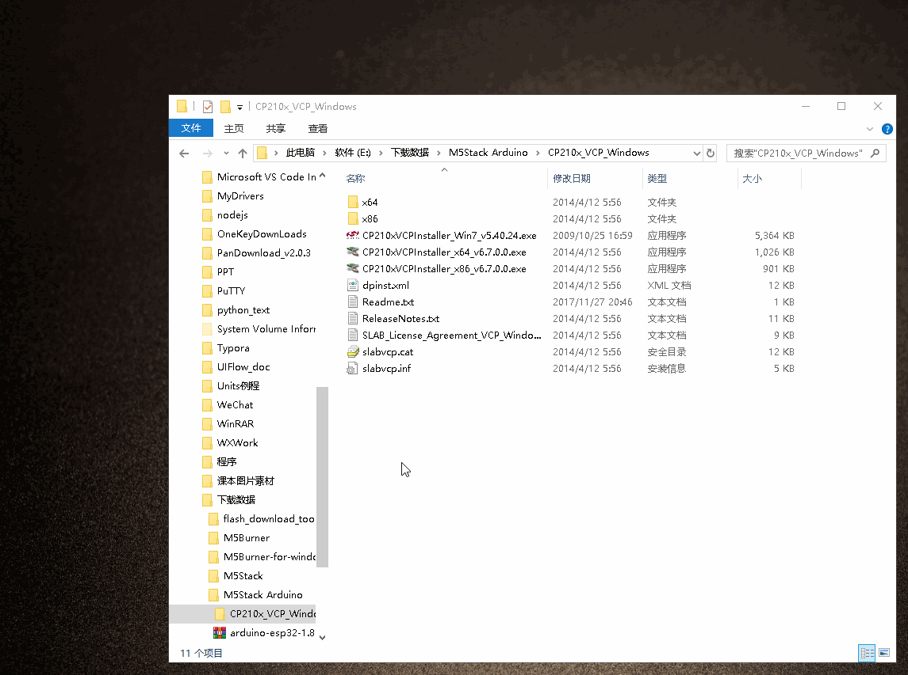
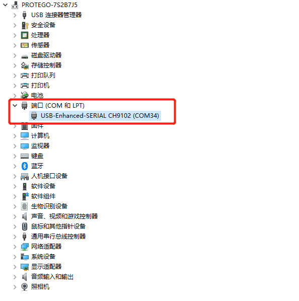

myStudio

1 myStudio设计初衷
myStudio是一个一站式的myRobot/myCobot等机器人的使用平台。
方便用户根据自己的使用场景，选择不同的固件并进行下载，同时学习相关的教材，在线浏览教程视频。
2 myStudio最新版本与支持平台
最新版本：V3.5.9
适用于：Windows、Mac、Linux
3 myStudio功能
- 烧录、更新固件
- 提供机器人使用教程，如用户手册、视频教程、Q&A等
- 维护和维修方面的信息
4 myStudio适用设备
- myCobot 280
- myCobot 280 M5
- myCobot 280 PI
- myCobot 280 Jetson Nano
- myCobot 280 for Arduino
5 固件版本推荐
myCobot 280系列
固件是一种嵌在设备中的特殊软件，负责控制设备的基本功能。它就像设备的大脑，指挥硬件该如何工作。不同型号机械臂所需烧录的固件不同，myCobot 280系列共4个版本：M5版本、PI版本、arduino版本以及jetsonnano版本。不同版本核心型号不同，所需烧录的固件及其版本也不同。这里仅提供Ardunio版本的固件信息。末端atom为算法储存运算终端。

| 机械臂版本号 | 核心 | 所需烧录固件 | 推荐固件及其版本 |
| Arduino版本 | mega2560 | transponder固件 | 推荐烧录v1.0版本 |
| mkrwifi1010 | transponder固件 | 推荐烧录v1.0版本 | |
| Atom | atomMain固件 | 产品序列号为ER28001202200415及之前，或者产品无序列号，推荐烧录v4.1版本；序列号为ER28001202200416及之后，推荐烧录v5.1版本 |
myStudio环境搭建
myStudio下载和安装
注意：myStudio安装时的安装路径不能有任何空格
下载地址（我们提供2种下载地址，根据您的需求选择合适的下载地址即可）：
1. GitHub地址
- 进入下载地址后，点击右侧
myStudio，选择相应版本下载即可。


- 不同后缀代表了适用于不同的系统，请下载相应版本：
- *.tra.xz —— Linux系统
- *.dmg —— Mac 系统
- *.exe —— Window 系统
2. 官网地址
依据电脑系统自行下载即可。
注意：请下载最新版本。可以在下载好的myStudio界面中查看当前版本，并更新至最新版本。

安装驱动
用户可根据自己所使用的操作系统，点击下方按钮下载相应的 CP210X 或 CP34X 驱动程序压缩包，在解压压缩包后，选择对应操作系统位数的安装包进行安装。
目前存在两种驱动芯片版本， CP210X （适用于CP2104版本）以及CP34X （适用于CH9102版本）驱动程序压缩包。若您不确定您的设备所使用的USB芯片，可同时安装两种驱动。（ CH9102_VCP_SER_MacOS 在安装过程中，可能出现报错，但实际上已经完成安装，忽略即可。）
对于 Mac OS，在安装之前确保系统 "偏好设置->安全性和隐私->通用" ，并允许从 App Store 和被认可的开发者。
- 下载末端 Atom 串口驱动程序

如何区分CP210X和CP34X芯片
- 如下图所示，打开 设备管理器 ，查看 端口(COM和LPT)

- 若 端口(COM和LPT) 显示 USB-Enhanced-SERIAL CH9102，则为 CP34X芯片

- 若 端口(COM和LPT) 显示 Silicon Labs CP210x USB to UART Bridge，则为 CP210X芯片

烧录与更新固件
烧录 Atom 固件
第一步：与PC连接。用 USB 连接末端的Atom。底端的Arduino Board由用户自由开发，而末端的atom为算法储存运算终端，不可开发，只可使用本公司固件。
第二步：在Board一栏可以选择ATOM,侧边栏Basic就会出现 Atom 的固件。Atom 的固件就只有一个，点击烧入即可（下图以myCobot 280为例）。